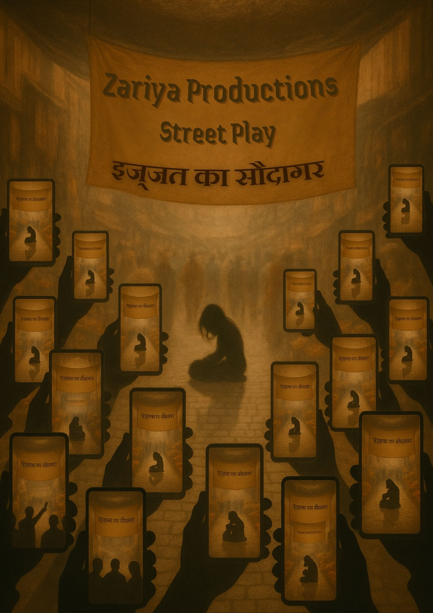
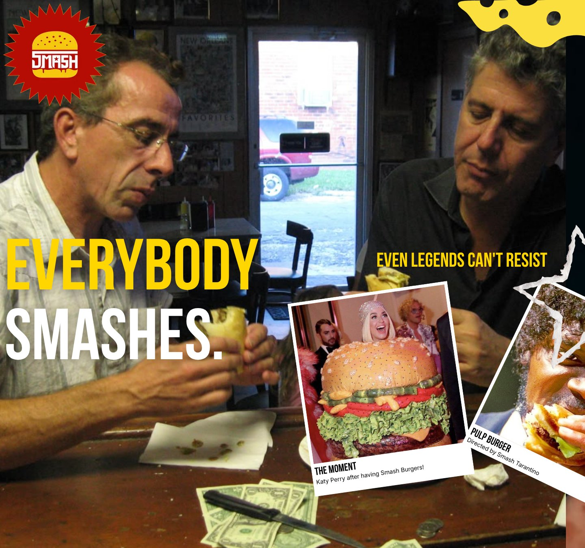
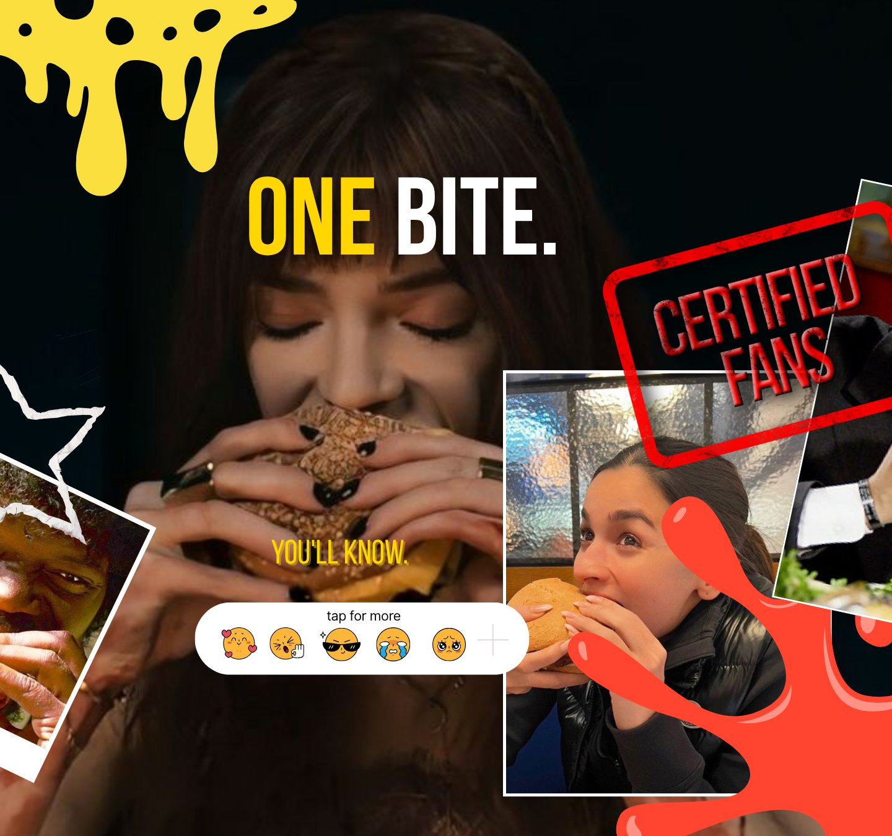
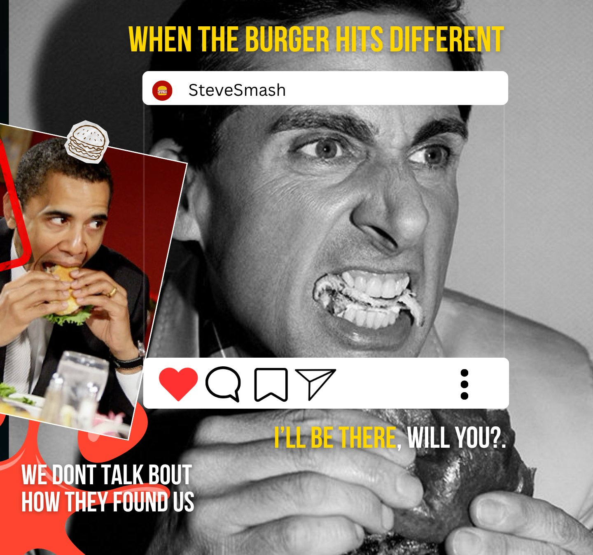

Six video edits, one poster and one carousel. Click a card to watch an edit, only if you want to.
Cuts · Press a card

Zariya Productions is a production house, and I am its Finance Head. I designed this poster for Izzat Ka Saudagar, one of our street plays.
It was made for the play itself: a real piece of promotion for a real performance, not a practice exercise.
Poster design · for Zariya Productions



I like smash burgers, so I made a carousel about them. That is the whole story: a personal project, for fun and for practice.
To be clear: this was not made for a client or a brand, and I have never worked with any food and beverage company. I enjoy the industry, so I make a few carousels like this here and there.
Flip through the three posts with the arrows.
Growth Marketer & Content Strategist
📍 Bengaluru, Karnataka
✉ das.2006prapti@gmail.com · 🔗 linkedin.com/in/praptid2006
BBA (Finance & Economics) student with growth experience across five Bengaluru startups. Skilled in performance marketing, SEO, A/B testing and funnel analytics, and I build websites and automation tools.
Growth & acquisition
AI & technical
Creative
The first phrase that comes to mind when you look at a brutalist building is: "big, bold, and taking up more space than it needs to." But that was never the original intention.
Brutalist architecture emerged in Europe after World War II. It peaked in the 1960s and became the dominant style for public buildings and social housing across the UK, USA, Eastern Europe, Israel, Japan, and Australia. The movement's foundation lies in honesty. Raw materials, visible structure, no ornamentation. The architects believed that truth in material would produce truth in society.
"These buildings were not meant to intimidate. They were meant to give people a blank canvas to fill in with their own memories."
The term "brutalist" comes from the French béton brut, meaning raw concrete. Le Corbusier introduced this vocabulary to architecture. His 1952 Unité d'Habitation housing block in Marseilles set the template. But the architects who gave brutalism its name and its philosophy were Alison and Peter Smithson, a British couple who believed ornamentation was a moral crime.
The movement spread fast, partly because the 1950s demanded it. Post-war cities needed rebuilding, budgets were tight, and concrete was cheap. This produced some remarkable work: the Boston City Hall by Kallmann, McKinnell and Knowles; Paul Rudolph's Yale Art and Architecture Building; the Barbican Estate in London; Erno Goldfinger's Trellick Tower; and Kenzo Tange's Yoyogi National Gymnasium, built for the 1964 Tokyo Olympics.
"Concrete was not just affordable. It allowed the forms that brutalism required: massive, honest, uncompromising."
Brutalism collapsed in the 1970s. The energy crisis made these enormous buildings commercially unviable. Many were badly constructed, and their maintenance costs became unsustainable. Worse, concrete does not age gracefully. It stains, cracks, and darkens under the weather. The buildings that were supposed to feel bold started to feel oppressive.
By the 1980s, structural expressionism and deconstructivism had taken over. Brutalist buildings sat abandoned, too expensive to demolish because of the carbon footprint involved in tearing them down.
Today brutalism is back, and this time it is celebrated. Its scale and uncompromising aesthetic read as futuristic rather than depressing. Filmmakers have been drawn to it for decades: Blade Runner's dystopian cityscapes owe a great deal to brutalist logic. Architects and designers now look at these structures through a nostalgic lens, appreciating what their creators actually intended.
There is a lesson in that. The buildings did not change. The way we see them did.
Paid acquisition, funnel optimization, A/B testing, and conversion analysis. Qualified leads up 25% a month at Solid Corp, website traffic up 15% in a month at Propalyst, and a ₹20K paid budget managed at GenAIPeople.
Content pillars, platform calendars, and campaign copywriting. Built pre-launch roadmaps for a premium fashion brand. Weekly content across 5 formats at GenAIPeople, and a Synapse series that reached 10K+ views and 3K+ followers in 3 months.
User behavior analysis, funnel tracking, hashtag strategy performance, and campaign reporting. Comfortable reading data and turning it into action.
Competed across 10+ intercollegiate fests with an 86% win rate. Experience pitching campaigns, marketing strategies, and business plans to panels and audiences.
Python, SQL, Power BI, Advanced Excel, n8n and Streamlit, plus Next.js and Sanity CMS (built the GenAIPeople site with a password-protected CMS). Automated WhatsApp webinar reminders from Zoom registrations in Google Sheets.
Long-form essays, campaign copy, email sequences, ad scripts, and editorial content. Produced the copy for multiple brand campaigns and an edtech content engine.
Christ University · July 2025 – Present
86% win rate across 10+ intercollegiate fests. Led team coordination, event strategy, and execution.
Christ University · Jan 2025 – Mar 2026
Led a content series that reached 10K+ views and 3K+ followers in 3 months.
Christ University · 2025 – Present
Plan budgets for rehearsals, costumes and performances.
Dec 2025 · 3rd Place, Aagaz Street Play (Zariya Productions)
Placed 3rd in the street play category.
Nov 2024 · 3rd Position — Marketing
Recognized for campaign ideation, brand positioning, and pitch performance.
Christ University · Jul 2024
Placed 2nd in a competitive business simulation, solving real-world business challenges as a team.
Bharatiya Vidya Bhavan's · 2022
Best Delegate at Bhavan's MUN, and 2nd place at Yuva Sangharsh, a case-study and negotiation competition.
Hyderabad · Aug 2023
Led conference operations, chaired committees, and managed delegate coordination end to end.
Growth work across five Bengaluru startups, each with a result I can point to.
Ran the founder's social media, built the pre-launch roadmap with content pillars and influencer coordination, and grew the organic audience to 2K+ followers through analytics, SEO and hashtag strategy. Sept – Nov 2025.
Weekly content across 5 formats, the company website built on Next.js and Sanity CMS, a managed ₹20K ad budget, and an outbound LinkedIn funnel for senior developers that brings in 15–20 qualified strategy calls a month. Dec 2025 – present.
Led growth for RoofMyWorld and Nibble Foods. A/B tests and funnel analytics grew qualified leads 25% a month. Sept 2025 – Jan 2026.
Lifted website traffic 15% in one month through optimised listings, local SEO and campaign tracking, and streamlined listing data by coordinating 50+ brokers. Sept 2025 – Jan 2026.
Scaled the app to 10K+ downloads and 1K+ followers in one month through digital campaigns. Away from work, 86% win rate across 10+ intercollegiate fests with CUSBMA. Sept 2024 – Apr 2025.
My goal is to work in marketing that actually matters to the culture. These are the three industries I am actively working toward.
Film has always shaped how people see the world. I want to work on the marketing side of that: campaigns, release strategy, social campaigns for films and streaming projects. I follow film marketing closely and study how studios position releases. I already work in performance: I cut video edits, I am Finance Head of Zariya Productions, a production house whose street play placed 3rd at Mood Indigo, IIT Bombay, and I made the poster for Izzat Ka Saudagar.
I interned at Darshe, a premium fashion brand, where I built the marketing roadmap from scratch and managed the founder's entire social presence. Fashion marketing demands both cultural awareness and executional precision. I have experience in both, and a genuine interest in the history and business of fashion that makes me better at the work. That work took the audience to 2K+ organic followers.
I have not worked with any food and beverage company yet, and I want to be upfront about that. I like the industry, so I make the odd carousel for fun, like the smash burger one in the Work section. It is a personal project, not client work. Food marketing is fast, competitive and endlessly creative, and it is a space I would love to move into.